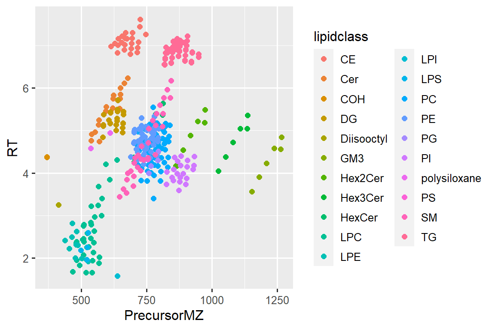

4 Select and plot
4.1 Introduction
In this chapter we will look at how read data from files into R ### Prerequisites
library(here)
library(tidyverse)
library(SLINGtools)4.2 Import an Agilent MassHunter CSV file
data_file_path <- here("data/Testdata_Lipidomics_MHQuant_Detailed_V2.csv")
d_orig <- read_MassHunterCSV(data_file_path)#> Reading 'Testdata_Lipidomics_MHQuant_Detailed_V2.csv' ...
#>
indexing Testdata_Lipidomics_MHQuant_Detailed_V2.csv [=====-] 2.15GB/s, eta: 0s
indexing Testdata_Lipidomics_MHQuant_Detailed_V2.csv [======] 1.77GB/s, eta: 0s
Imported 215 samples with 428 transitionsprint(d_orig)#> # A tibble: 92,020 × 14
#> DataFileName DataName SampleType AcqTimeStamp VialPosition Feature
#> <chr> <chr> <chr> <dttm> <chr> <chr>
#> 1 001_EQC_TQC prer… 001_EQC… EQC 2018-04-12 18:28:00 Vial 2 CE 14:0
#> 2 001_EQC_TQC prer… 001_EQC… EQC 2018-04-12 18:28:00 Vial 2 CE 15:0
#> 3 001_EQC_TQC prer… 001_EQC… EQC 2018-04-12 18:28:00 Vial 2 CE 16:0
#> 4 001_EQC_TQC prer… 001_EQC… EQC 2018-04-12 18:28:00 Vial 2 CE 16:1
#> 5 001_EQC_TQC prer… 001_EQC… EQC 2018-04-12 18:28:00 Vial 2 CE 16:2
#> 6 001_EQC_TQC prer… 001_EQC… EQC 2018-04-12 18:28:00 Vial 2 CE 17:0
#> # … with 92,014 more rows, and 8 more variables: IonPolarity <fct>,
#> # PrecursorMZ <dbl>, ProductMZ <dbl>, CollisionEnergy <dbl>, RT <dbl>,
#> # Area <dbl>, FWHM <dbl>, MI <lgl>4.3 Select, remove, re-order, and rename columns
Use the function select()
d <- d_orig |>
dplyr::select(AnalysisID = "DataFileName",
QCtype = SampleType,
Compound = Feature,
Intensity = Area,
RT,
PrecursorMZ)
print(d)#> # A tibble: 92,020 × 6
#> AnalysisID QCtype Compound Intensity RT PrecursorMZ
#> <chr> <chr> <chr> <dbl> <dbl> <dbl>
#> 1 001_EQC_TQC prerun 01.d EQC CE 14:0 1532 6.98 615.
#> 2 001_EQC_TQC prerun 01.d EQC CE 15:0 515 7.13 629.
#> 3 001_EQC_TQC prerun 01.d EQC CE 16:0 127953 7.16 643.
#> 4 001_EQC_TQC prerun 01.d EQC CE 16:1 40374 7.00 641.
#> 5 001_EQC_TQC prerun 01.d EQC CE 16:2 1340 6.82 639.
#> 6 001_EQC_TQC prerun 01.d EQC CE 17:0 7227 7.22 657.
#> # … with 92,014 more rows4.4 Filter rows
Use the function filter().
d |> filter(AnalysisID == "149_BQC_PQC17.d ")
d |> filter(AnalysisID == "149-bQC_PQC17.d", Compound == "TG 48:1 [-18:1]")
d |> filter(QCtype == "BQC")
d |> filter(QCtype == "BQC" | QCtype == "TQC" )
d |> filter(QCtype == "BQC" & QCtype == "TQC" )
d |> filter(QCtype %in% c("BQC", "TQC"))4.5 Let’s finally plot
# For this we take one single sample, let's say a BQC
d_plot <- d |>
filter(AnalysisID == "066_BQC_PQC07.d")
# Base R
plot(x = d_plot$PrecursorMZ, y = d_plot$RT)
# ggplot
ggplot(d_plot, aes(x = PrecursorMZ, y = RT)) +
geom_point(size = 2, color = "blue")#> Warning: Removed 2 rows containing missing values (geom_point).4.6 Split column to get lipid class
d_plot_wclass <- d_plot |>
separate(
col = Compound,
into = c("lipidclass", "chain"),
sep = " ",
extra = "merge",
remove = FALSE)
d_plot_wclass#> # A tibble: 428 × 8
#> AnalysisID QCtype Compound lipidclass chain Intensity RT PrecursorMZ
#> <chr> <chr> <chr> <chr> <chr> <dbl> <dbl> <dbl>
#> 1 066_BQC_PQC07.d BQC CE 14:0 CE 14:0 1152 6.98 615.
#> 2 066_BQC_PQC07.d BQC CE 15:0 CE 15:0 984 7.06 629.
#> 3 066_BQC_PQC07.d BQC CE 16:0 CE 16:0 93268 7.16 643.
#> 4 066_BQC_PQC07.d BQC CE 16:1 CE 16:1 51054 7.01 641.
#> 5 066_BQC_PQC07.d BQC CE 16:2 CE 16:2 1870 6.83 639.
#> 6 066_BQC_PQC07.d BQC CE 17:0 CE 17:0 9050 7.22 657.
#> # … with 422 more rows4.7 Now let’s plot again
# ggplot
ggplot(d_plot_wclass, aes(x = PrecursorMZ, y = RT, color = lipidclass)) +
geom_point(size = 2)#> Warning: Removed 2 rows containing missing values (geom_point).
4.8 … another time
# ggplot
ggplot(d_plot_wclass, aes(x = PrecursorMZ, y = RT, color = lipidclass, size = Intensity/10)) +
geom_point()#> Warning: Removed 2 rows containing missing values (geom_point).
4.9 Comparisons in R
Run following lines and try understand the result
"CE 18:1" == "CE 18:1"
"CE 18:1" == "CE 18:1 "
"CE 18:1" == "CE 18:1"
"Ce 18:1" == "CE 18:1"
stringr::str_trim("CE 18:1 ")
stringr::str_trim(" CE 18:1 ")
stringr::str_squish(" CE 18:1 ")
stringr::str_detect("LPC 18:1 (IS)", pattern = "IS")
stringr::str_detect("LPC 18:1 (ISTD)", pattern = "IS")
stringr::str_detect("LPC 18:1 (IS)", pattern = "ISTD")
stringr::str_detect("LPC 18:1 (IS)", pattern = "LPC")
stringr::str_replace("Acylcarnitine 18:1",
pattern = "Acylcarnitine",
replacement = "CAR")
stringr::str_replace("TG 48:2 [SIM] Results",
pattern = " Results",
replacement = "")
stringr::str_replace("112_BQC_A9334.d",
pattern = ".d",
replacement = "")
stringr::str_to_lower("CE 18:1")
Sample_ID <- 1
try(Sample-ID <- 1)
# d |> filter(AnalysisID == "149_BQC_PQC17.d",
# str_detect(Compound, "IS|LPI") )
#
# d |> filter(str_detect(AnalysisID, "BQC|TQC") ,
# str_detect(Compound, "IS")) -> temp4.10 Convert long table to wide table format
# d_area_temp <- d |>
# pivot_wider(names_from = "Compound" ,values_from = "Area")# d_BQC <- d_area |> filter(QCtype == "BQC")
#
#
# d_res1 <- d_BQC |>
# summarise(
# across(.cols = -seq_no:-AcqTimeStamp,
# .fns = ~ sd(.)/mean(.)*100)
# )
# d_res1
#
# d_BQC_areas <- d_BQC |> dplyr::select(-seq_no:-AcqTimeStamp)
# d_res2 <- purrr::map_df(d_BQC_areas, .f = ~ sd(.)/mean(.)*100)
# d_res2
#
# d_res3 <- sapply(X = d_BQC_areas,
# FUN = function(x) c(CV = sd(x)/mean(x) * 100,
# RobustCV = mad(x)/median(x) * 100))
# as.data.frame(d_res3)
# as.data.frame(t(d_res3))
#
# d_BQC_long <- d_BQC |> pivot_longer(cols = -seq_no:-AcqTimeStamp,
# names_to = "Compound",
# values_to = "Area")
#
# d_BQC_stats <- d_BQC_long |>
# group_by(Compound) |>
# summarise(
# count = n(),
# Mean = mean(Area),
# Min = min(Area),
# CV = sd(Area)/mean(Area) *100,
# logCV = sqrt(exp(1)^(sd(log(Area))^2)-1) *100,
# logCV_roche = sqrt(10^(log(10)*sd(log(Area, 10))^2)-1) *100,
# rCVq = 0.75 * IQR(Area, na.rm = TRUE)/median(Area) *100,
# rCVm = mad(Area, constant = 1.4826)/median(Area) *100
# )
# d_BQC_stats
#
# hist(d_BQC_stats$CV)
# hist(d_BQC_stats$rCVm)
#
# ggplot(d_BQC_stats) +
# geom_histogram(aes(x=CV))
#
# d_BQC_stats_long <- d_BQC_stats |>
# dplyr:::select(Compound, CV,rCVm,,rCVq, logCV) |>
# pivot_longer(cols = -Compound, names_to= "CV_type" ,values_to = "Value")
# d_BQC_stats_long
#
# ggplot(d_BQC_stats_long) +
# geom_histogram(aes(x=Value, fill = CV_type)) + scale_x_continuous(limits = c(0,150)) + facet_wrap(~CV_type)
#
#
# plot(d_BQC_stats$CV, d_BQC_stats$logCV)
# plot(d_BQC_stats$CV, d_BQC_stats$logCV, xlim = c(0,100), ylim = c(0,100))
# plot(d_BQC_stats$CV, d_BQC_stats$rCVm)
# plot(d_BQC_stats$logCV, d_BQC_stats$rCVm, xlim = c(0,200))
# plot(d_BQC_stats$CV, d_BQC_stats$rCVq)